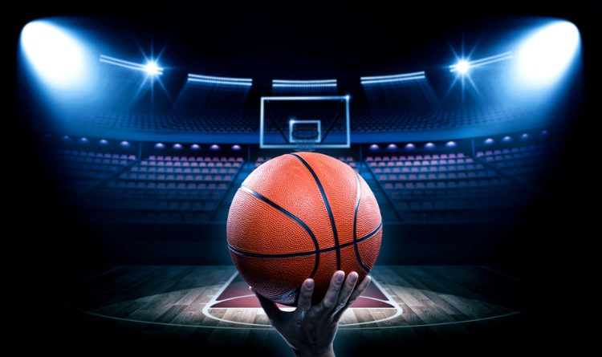
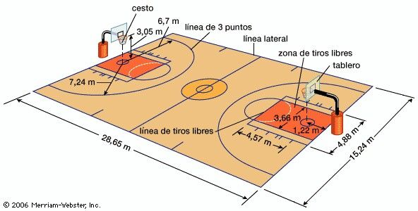
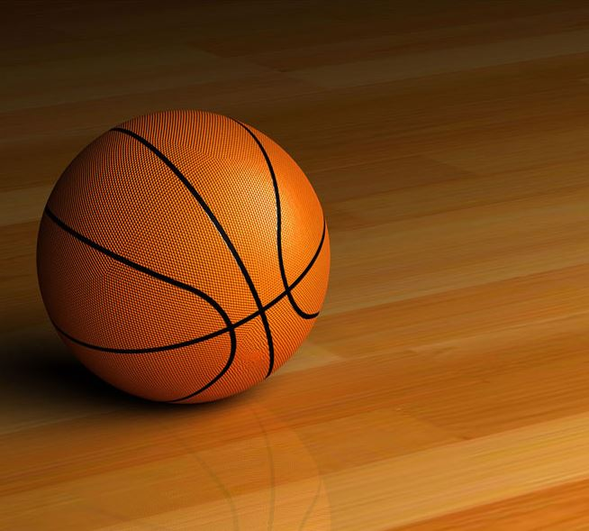

La cancha
El baloncesto se juega por lo general en una cancha cubierta, pero también se practica al aire libre como actividad recreativa, como en el caso de una variante popular, el Street Ball o «baloncesto de calle». La superficie debe ser plana, rectangular y libre de obstáculos. Las dimensiones varían según el país o las reglas. Las medidas reglamentarias de la FIBA son 28 m de largo por 15 m de ancho. En los Estados Unidos, las ligas profesionales se juegan en pistas de 28,65 m de largo por 15,24 m de ancho, pero en las escuelas la longitud de la cancha es menor, 25,60 m. Las canchas cubiertas suelen estar revestidas de parqué.
La pista está delimitada por las líneas de banda y las líneas de fondo que, al igual que todas las líneas de la superficie de juego, miden 5 cm de ancho. El perímetro debe estar libre de obstrucciones hasta los dos metros de distancia. La línea de medio campo divide la cancha en dos mitades y parte un círculo central de 3,6 m de diámetro. Para cada equipo, el medio campo que contiene la canasta que se defiende se denomina medio campo defensivo y el medio campo que contiene la canasta en la que se pretende anotar se denomina medio campo ofensivo. En los extremos de la pista se sitúan los aros a 3,05 m de altura y adentrados 1,20 m dentro del campo de juego.
La línea de tiro libre, se traza paralela a la línea de fondo, a 5,80 m de esta y a 4,60 m de la canasta. Un círculo de 3,6 m de diámetro rodea la línea de tiro libre. La zona restringida comprende el área de 4,9 m de anchura entre las líneas de fondo y de tiro libre. Según el reglamento de la FIBA en vigor desde octubre de 2010, la línea de tres puntos se encuentra situada a 6,75 m de distancia de la canasta, un valor intermedio entre el usado anteriormente en la NBA (7,24 m) y en Europa (6,25 m). Las nuevas reglas definen también un semicírculo de 1,25 m de radio bajo la canasta, en el que la carga ofensiva no se considera falta.
El balón de baloncesto
Los primeros balones de Basketball aparecieron en el año 1891 y fueron fabricados con una vejiga de goma cubierta por cuero cosido, además le añadieron un forro elaborado en tela buscando darle soporte y uniformidad. En el año 1942 fue inventada la versión moldeada de los balones de baloncesto.
El balón que se utiliza en el baloncesto es una bola esférica, por lo general de color naranja, su fabricación es de diferentes materiales, según sea utilizada si es para baloncesto interior o exterior. Su peso y tamaño depende si será destinado para una liga infantil, para un básquet masculino o femenino.
La American Basketball Association (ABA) utiliza en el año 1967 un balón de color tricolor, rojo blanco y azul, El cuero ha sido el material más utilizado en la elaboración de estos balones, pero, a finales de 1990 se comenzó a usar el material sintético, siendo este muy aceptado en la mayoría de las ligas, gracias a su buen rendimiento en situaciones extremas.
Los balones de basketball en su interior poseen una cámara estructurada como un globo que sostiene el aire y una carcasa. Esta cámara es fabricada de caucho de butilo y la carcasa está compuesta por bandas de rodaduras de poliéster y nylon. Estas pelotas son etiquetadas y estas son impresas en papel de aluminio.